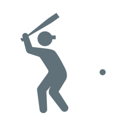
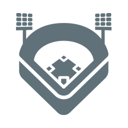

試合記録
成長記録
練習記録
ケガ・コンディション
野球用品
写真・思い出
練習を記録する
練習内容・変化を無理なく記録
すべて
中1
中2
中3
＋追加
読み込み中…
← 戻る
練習を記録する
日付
練習メニュー（複数選択可）
北
Amazing
素振り
家トレ
プール
朝練
その他
その他の内容
練習時間（分）
場所
選択してください
河川敷
HiroshimaBase
公園
家
宇品
吉島プール
その他
メモ
保存する

試合

ホーム
その他